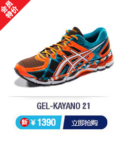

产品列表
- 
亚瑟士ASICS跑步鞋2015春夏新款运动鞋男款避震跑鞋KAYANO T4H2N-9001 橙色/白色 42

亚瑟士ASICS运动鞋2015春夏新款跑步鞋女鞋稳定跑鞋KAYANO T4H7N-0701 黄色/白色 37.5

亚瑟士ASICS跑步鞋春夏透气稳定女款跑鞋 KAYANO T4N5N-3591 玫红色/黑色 37.5

亚瑟士ASICS高帮运动休闲鞋男鞋运动鞋DOUBLEH54XJ-5050 黑色/黑色 40.5

Onitsuka Tiger运动休闲鞋女COLORADO D4S6N-1850 珊瑚色/淡灰色 37.5